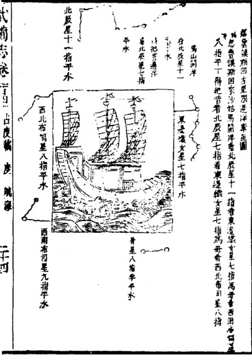

第一次下西洋
永乐三年六月十五日(1405年7月11日)，明成祖“命和及其侪王景弘等通使西洋”。郑和船队“自苏州刘家河（即刘家港，今江苏省太仓浏河，泛海至福建”。 抛泊休整。同年冬天，趁东北季风“复自福建五虎门（在今福建省长乐县）扬帆南下。此行首达占城（今越南中南部），再至爪哇。然后，经旧港〔今苏门答腊岛巨港）、 苏门答刺、南巫里(即南浡里，今苏门答腊班达亚齐)，锡兰山（今斯里兰卡），抵达古里(今印度卡利卡特，又译科泽科德)。水乐五年九月二日(1407年10月2日)，郑和回到南京复命。
第二次下西洋
“水乐五年(1407年)九月癸亥（十三日），郑和复使西洋”。这次主要访问了占城、爪哇、暹罗（今泰国）、满刺剌加、南巫里、加异勒（今印度南端加耶尔伯德纳姆）、 锡兰山、柯枝（今印度柯钦）、古里等国。回国之期，约在永乐七年(1409年)夏季七、八月间。
明朝茅元仪所著《武备志》中的郑和航海图
第三次下西洋
永乐七年秋九月(1409年10月)，郑和船队“自太仓刘家港开船，十月到福建长乐太平港停泊，十二月丁福建五虎门开洋，张十一帆， 顺风十昼夜到古城国”接着又经爪哇、满刺加、暹罗、阿鲁、苏门答刺、南巫里、到锡兰。在那儿，郑和派出一支分腙船队前往加异勒、 甘巴里（今印度科摩林角）、阿拨巴丹（似今印度西岸的阿麦达巴丹）：而自己则率大腙宝船访问小葛兰（今印度奎隆）、柯枝、古里。永乐九年六月十六日(1411年7月6日)，郑和还京。
第四次下西洋
经过前三次下西洋，明成祖“以西洋近国已航海贡琛，稽颡阙下，而远者犹未宾服，乃于“永乐十年(1412年)十月丙中（十五日）”， 下诏“遣太监郑和等赍敕”四下西洋，远航波斯湾、红海与乐非海岸。水乐十一年(1413年)冬十月，郑和正式启程。这次航行所及的海外国家计有： 满刺加、爪哇、占城、苏门答刺、柯枝、古里、喃渤利（即南巫里）、彭亨（今马来西亚彭京河口）、急兰丹（今马来西亚哥打巴鲁）、加异勒、 忽鲁谟斯（今霍尔木兹海峡格什姆岛）、比剌（似今莫桑比克港）、溜山（今马尔代夫群岛）、孙刺（似今莫桑比克的索法拉）、阿丹（今民主也门的亚丁）、 刺撒（今伊萨角）、木骨都束（今摩加迪沙）、不刺哇（今布腊瓦）、麻林(今基尔瓦·基西尼瓦) 等。永乐十三年七月八日(1415年8月12日)，郑和回国。